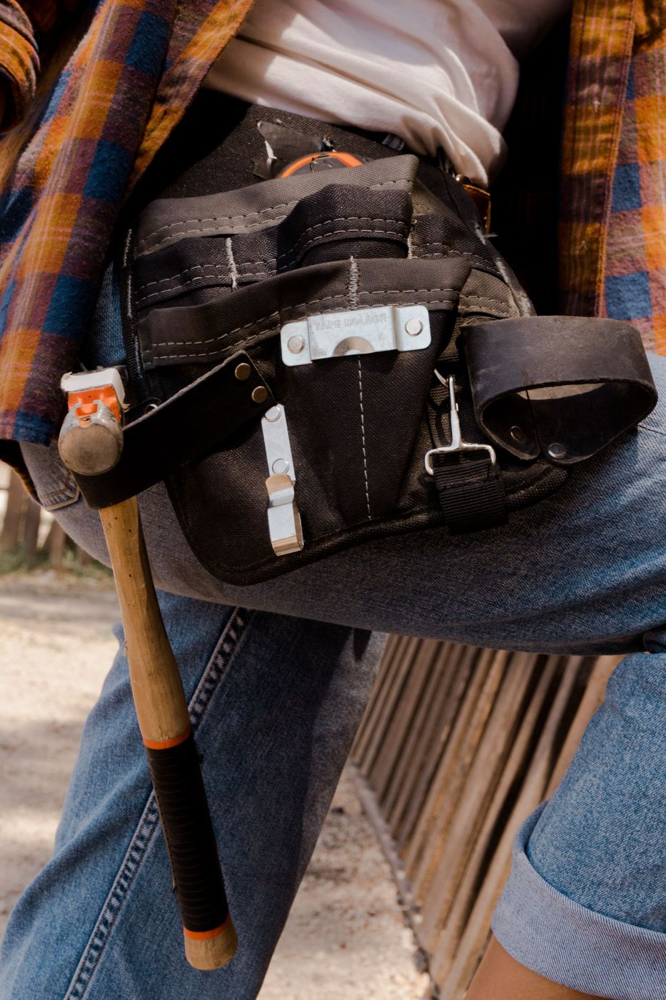

Abattage et émondageAbattage et émondage
Un arbre mort, malade ou trop proche de la maison devient un risque. On l’abat par sections quand l’espace est restreint, ou on le taille pour le garder en santé.
- Abattage complet ou par sections, avec cordes
- Émondage et élagage d’entretien
- Branches au-dessus du toit, de la piscine ou des fils
- Déchiquetage des branches et bois coupé en bûches
Urgences après tempête
Vent, verglas, neige lourde : quand un arbre tombe, chaque heure compte. On se déplace 24/7 pour sécuriser les lieux et dégager l’accès.
- Arbre tombé sur la maison, le garage ou l’auto
- Entrée ou chemin bloqué
- Branches cassées suspendues
- Sécurisation puis nettoyage complet
Construction et rénovation
Après l’arbre, le terrain et la maison. Patio, cabanon, clôture ou réparation après une tempête : on construit solide, avec du travail soigné.
- Patios et galeries en bois
- Cabanons et abris
- Clôtures
- Réparations après dommages
Homme à tout faire
Les petits travaux qui s’accumulent : on s’en occupe. Un seul appel pour l’entretien de votre propriété.
- Déblaiement de terrain et de branches
- Entretien saisonnier
- Petites réparations intérieures et extérieures
- Transport et coups de main